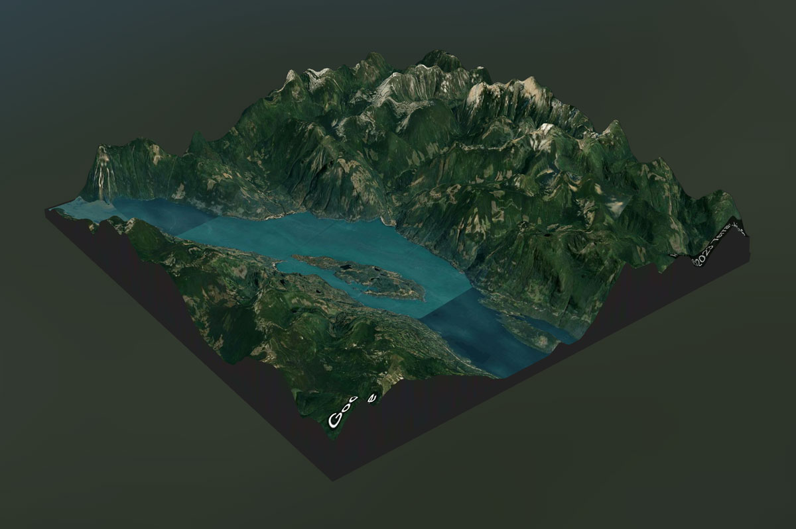
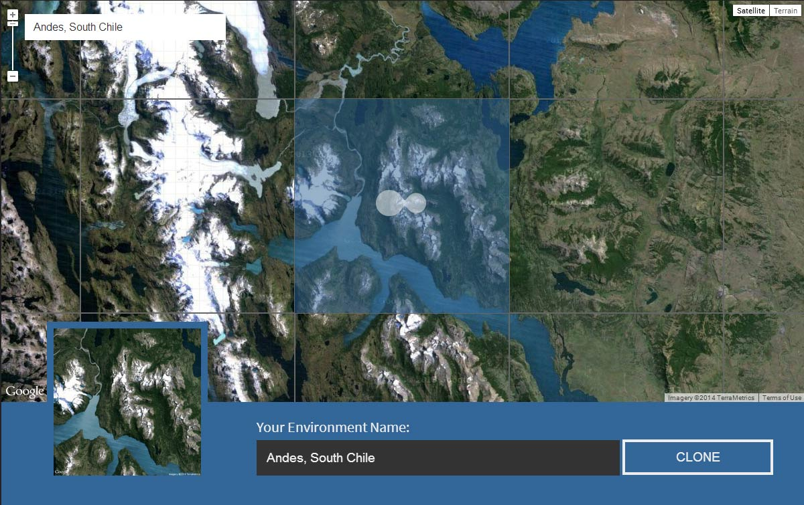
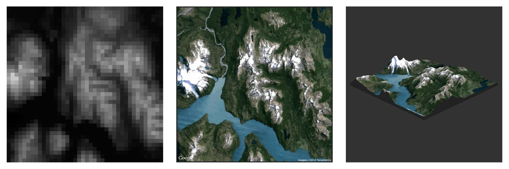
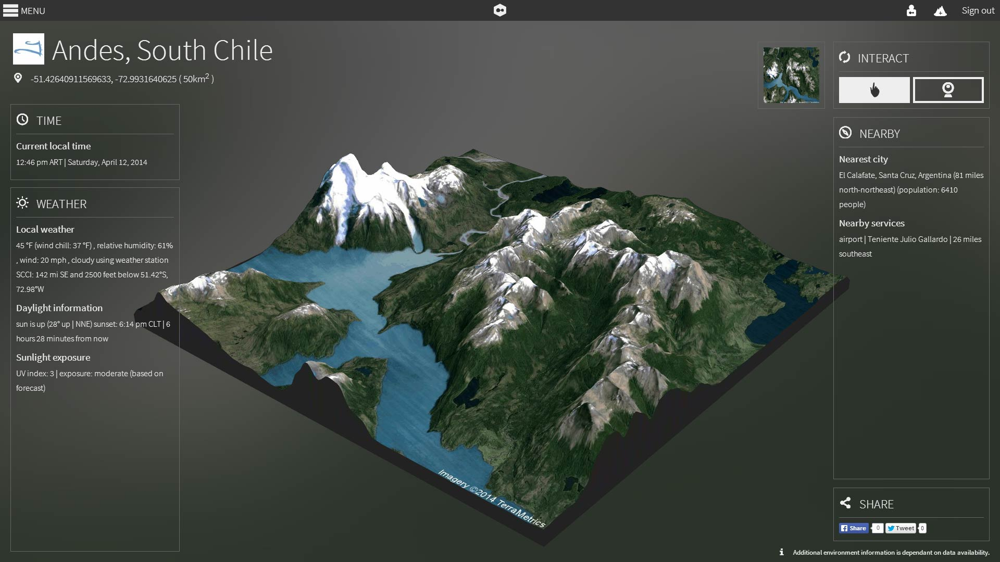
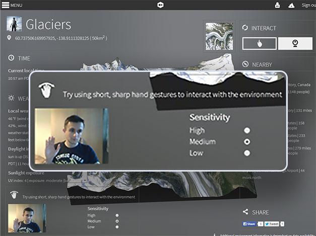
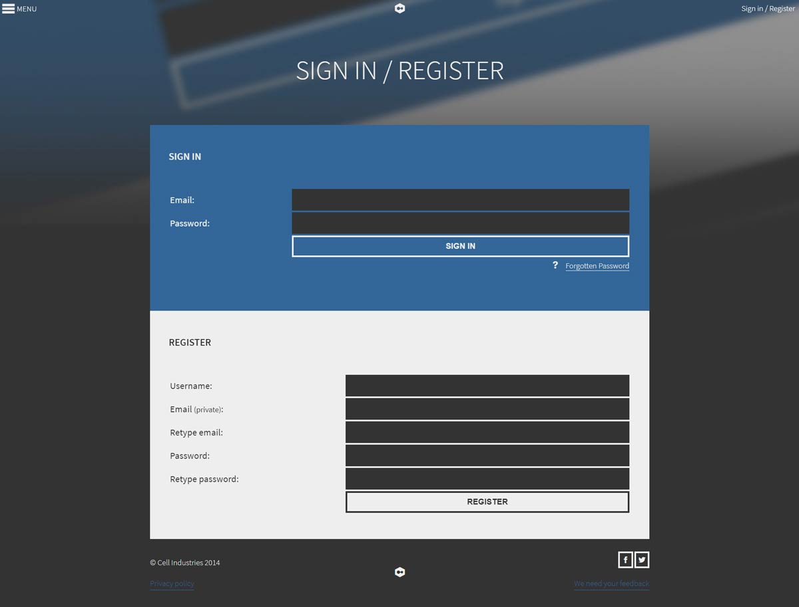
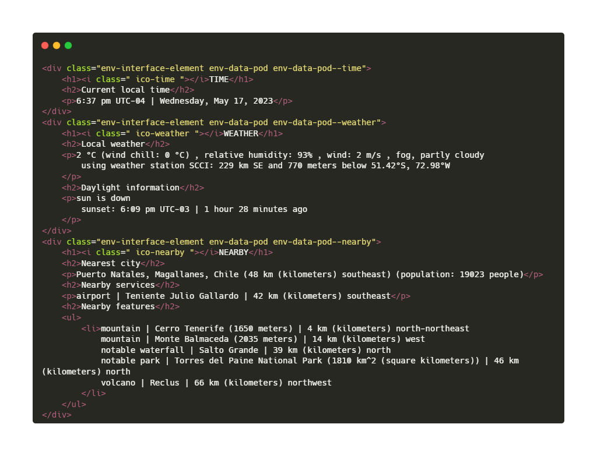
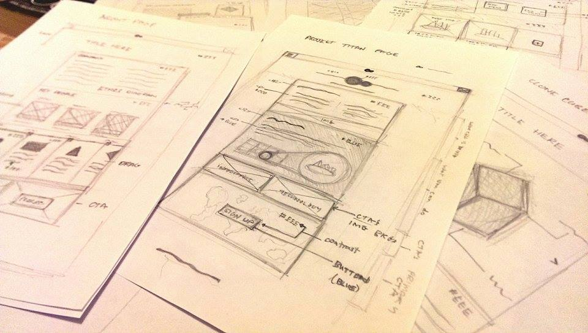
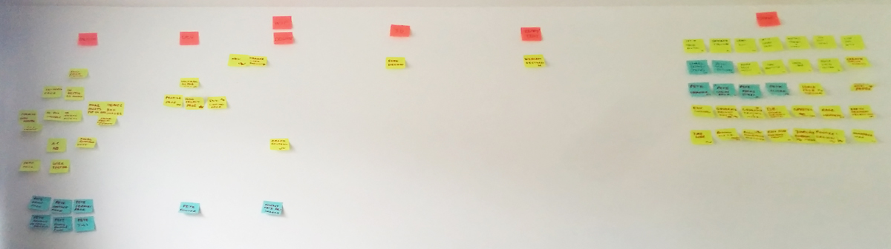
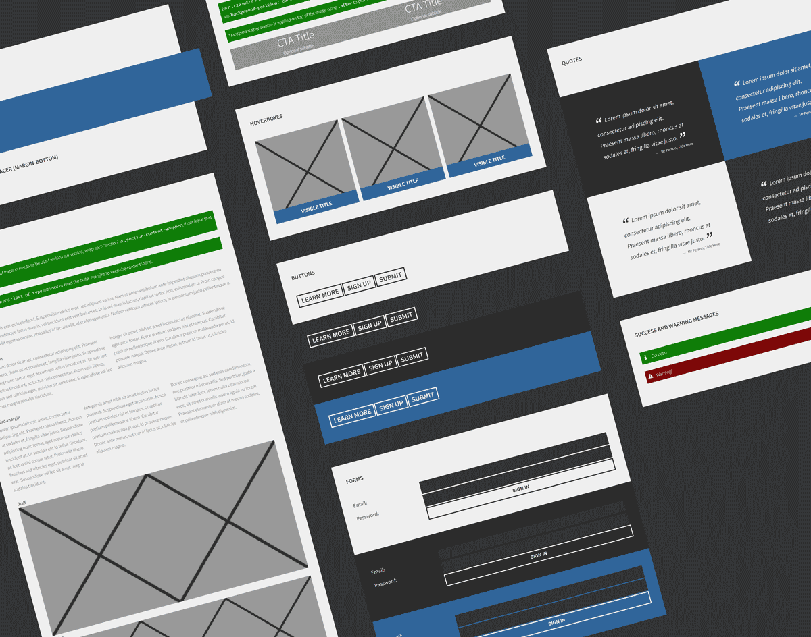

Context
Cell Industries was a final year project built in collaboration with Jacob Hammond and Joseph Williams at the University of Kent.
The project explored programmatic generation of 3D terrain, rendering models in the browser, augmented information from WolframAlpha, webcam gesture interaction, and a lightweight web interface for exploring real locations as physical objects.

Generating models
The user starts by zooming into a map and selecting a 50km2 tile. Tiles with varied elevation, such as mountains, produce more interesting terrain models.



Interactive 3D
Three.js rendered the generated 3D scene in the browser, with controls to rotate and zoom the model using mouse and keyboard input.


We used WolframAlpha's API to augment the interface with live contextual data about the selected location, including time, weather, and nearby attractions.

Approach
The project was shaped through wireframes, mockups, and user feedback, with the team iterating on both the model-generation flow and the supporting interface.

We managed the project with a physical kanban board and regular standups. Features were prioritised into three categories so the essential work stayed visible, and development followed a Git workflow with regular code reviews.


Cell was awarded the Sagittarius Digital Prize for Best Integrated Multimedia Project in Multimedia Technology and Design. Read the award note.